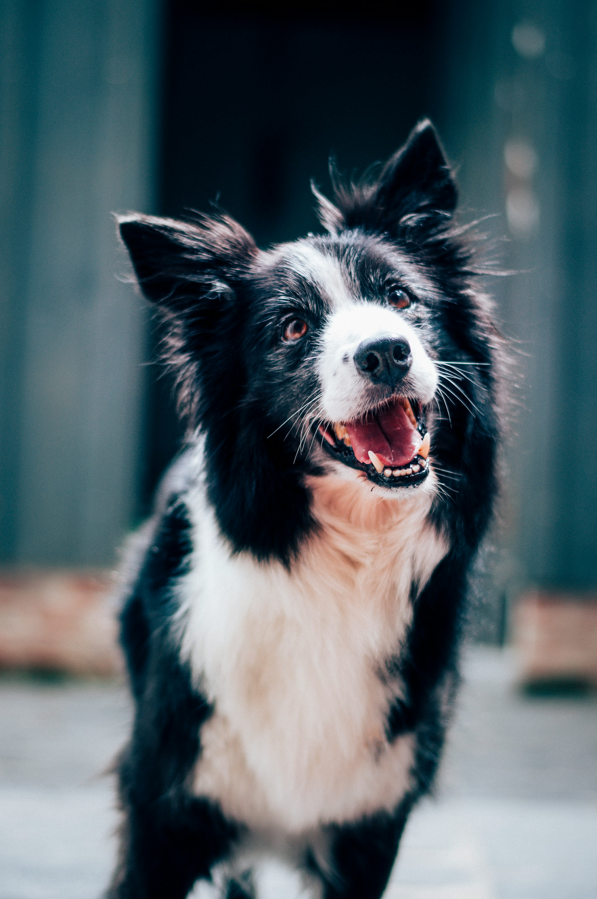
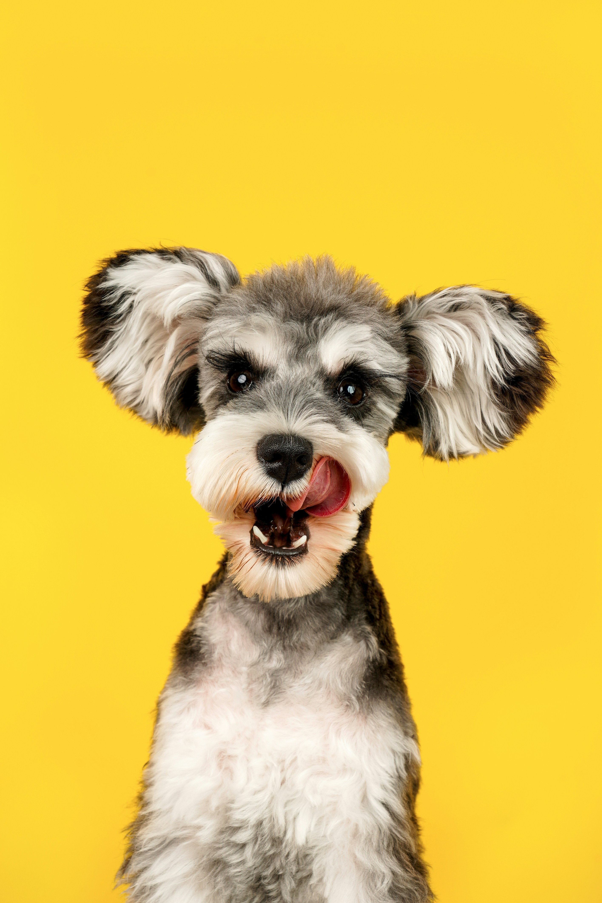
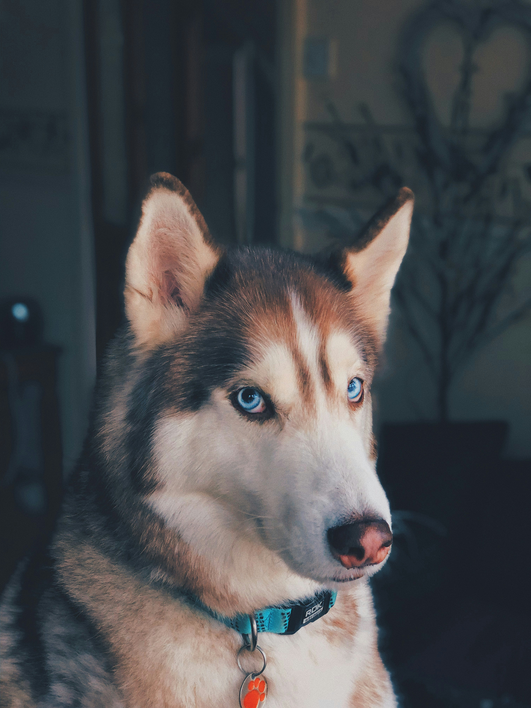
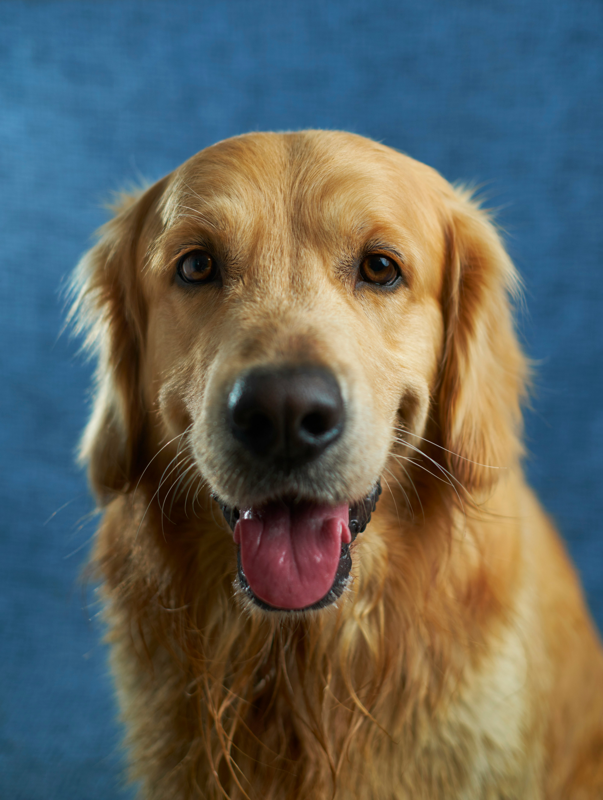
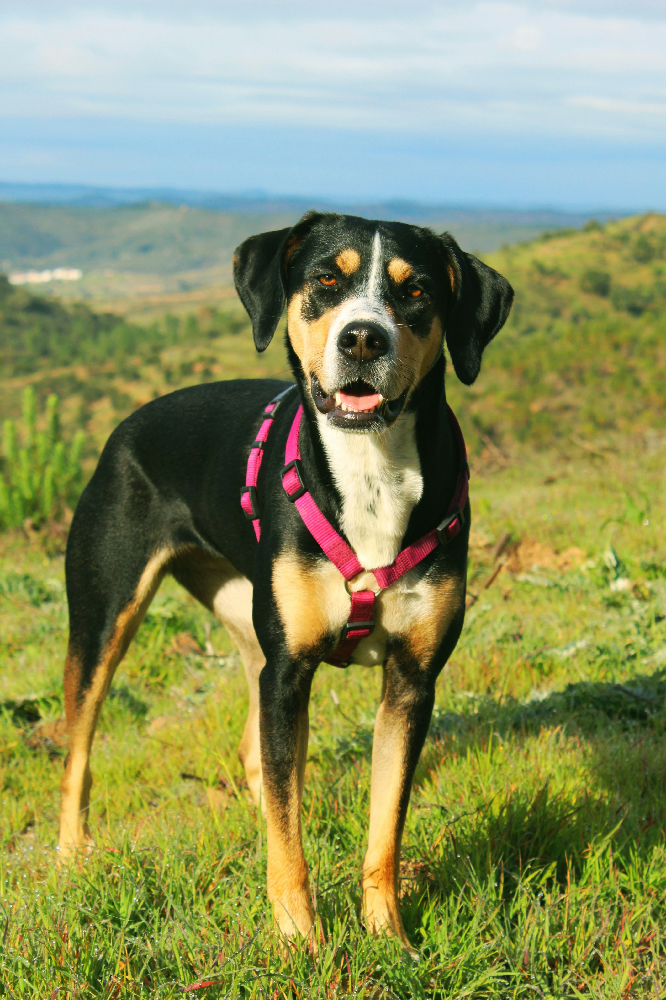
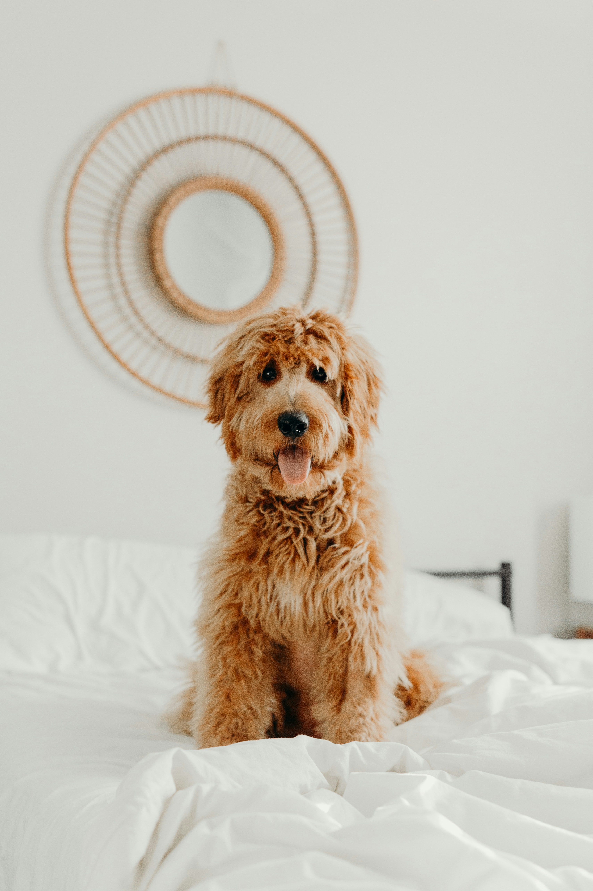
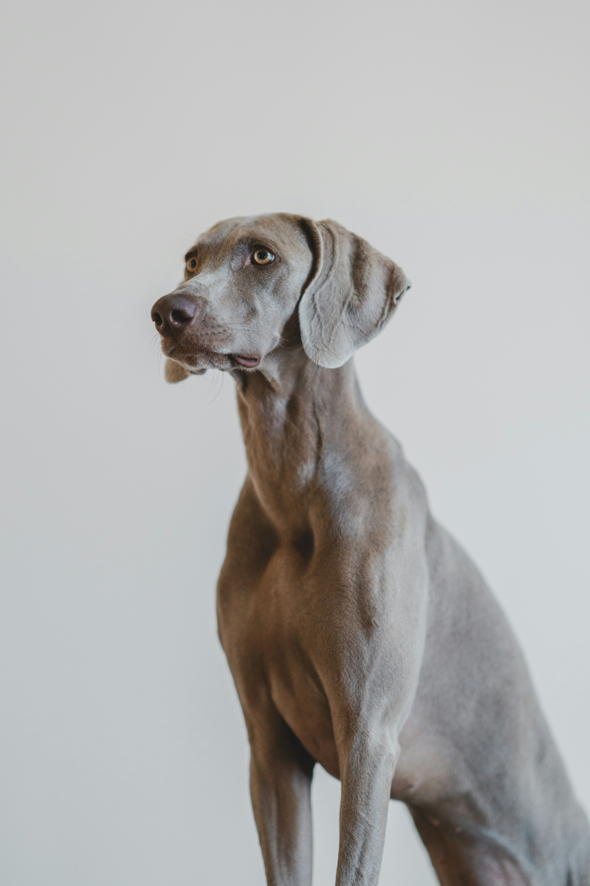

Available Dogs for Adoption
Find your new best friend - browse all our dogs currently looking for a forever home.
Search and filter dogs
Dog listings
-

Max
Age: 2 years | Size: Large
Breed: Border Collie
Max is a great ball of energy and loves long walks on the beach.
-

Trixie
Age: 4 years | Size: Small
Breed: Scottish Terrier
Trixie is a perfect companion for someone with a calm and slow lifestyle. She loves to take afternoon naps in a sunny spot.
-

Diesel
Age: 7 years | Size: Large
Breed: German Shepherd
Diesel is an older man that likes to sleep late and cuddles with his human.
-

Bella
Age: 4 years | Size: Large
Breed: Husky
Bella is a loyal and loving girl who adores belly rubs and playtime in the garden.
-

Charlie
Age: 9 years | Size: Large
Breed: Golden Retriever
Charlie is a gentle senior boy who is perfectly happy with slow walks and afternoon naps.
-

Sky
Age: 2 years | Size: Medium
Breed: Appenzeller Sennenhund
Sky is an adventurous and intelligent girl who would love an active family.
-

Teddy
Age: 2 years | Size: Medium
Breed: Goldendoodle
Teddy loves long walks and playing fetch.
-

Ghost
Age: 9 years | Size: Large
Breed: Weimaraner
Ghost is a active dog that loves long runs.
-

Luke
Age: 4 years | Size: Small
Breed: Shih Tzu
Luke loves to play fetch and will do anything for a treat.
Adoption Process
We want to make sure every dog goes to the perfect home. Here is what to expect:
-
1
Apply
Complete our online adoption enquiry form with your details and preferred dog.
-
2
Meet & Greet
Come to the shelter to spend time with the dog and make sure it is the right fit.
-
3
Home Visit
A volunteer will visit your home to ensure the environment is safe for the dog.
-
4
Adopt
Sign the adoption agreement, pay the adoption fee and take your new family member home!
Adoption FAQs
-
Our adoption fees range from R500 to R1 500 depending on the age and size of the dog. All fees go directly towards the care of the remaining animals at the shelter. Every adopted dog is vaccinated, sterilised, microchipped and dewormed.
-
Every adopted dog comes vaccinated, sterilised, microchipped, dewormed and with a basic starter pack including food, a collar and lead.
-
The process typically takes between 1 and 2 weeks from enquiry to adoption, depending on the availability of our volunteer team for the home visit.
-
Yes! We encourage you to visit the shelter during our open hours before submitting an application. Meeting a dog in person is an important part of finding the right match.